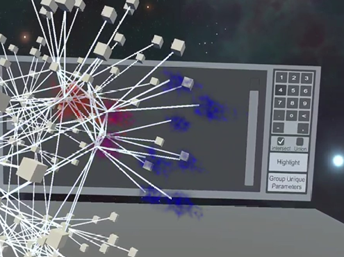
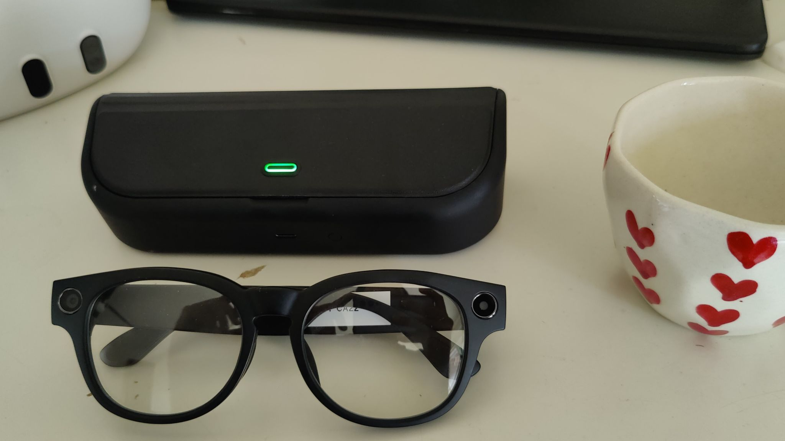

I build real-time 3D and AR/VR systems, from GPU-optimized rendering pipelines to accessibility-focused AR on Quest 3 and audio-first AI applications for smart glasses. I care about the engineering underneath: frame pacing, inference latency, interaction systems that don't break when something goes wrong.
Real deployed systems and active builds - performance numbers where they exist, honest WIP labels where they don't.

A cross-platform tool I built at OSU for HPC researchers to explore network datasets in immersive VR and on desktop. The biggest challenge was making it actually usable at scale - 10K+ nodes in a VR headset is a different problem than rendering the same data on a monitor. I had to rethink the entire rendering and loading pipeline to get there.
DrawMeshInstanced calls per batch (1023 max) with per-instance color via MaterialPropertyBlock to avoid breaking the instancing groupBiconnectedComponentsAlgorithm implementing Tarjan's articulation point detection via DFS, followed by flood-fill component membership and block-cut tree constructionAn AR assistant for visually impaired users that runs on Meta Quest 3. It streams passthrough camera frames to GPT-4o for real-time scene descriptions delivered through text-to-speech, with a parallel on-device ONNX pipeline so it can still detect objects without a network connection. The core design challenge was making inference reliable under mobile hardware constraints while keeping latency low enough that the audio feedback is actually useful.
PassthroughCameraUtils, frame capture as Texture2D, resize and TextureConverter.ToTensor, then layer-by-layer inference via ScheduleIterable yielding every 25 layers to keep the frame rate stableEnvironmentRayCastSampleManager to get real-world distance and directionQueue<AudioRequest> with rate limiting and new-detection diffing - announces the most important new objects without stepping on itselfA VR simulation of the OSU campus built in Unreal Engine, using the Cesium plugin to pull in real geospatial data so the buildings and layout actually match the physical campus. I wrote the VR pawn in C++ and spent time tuning the locomotion to feel natural on Quest controllers.
A 270-degree triple-screen driving simulator I set up for the OSU EECS XR Lab. The tricky part was getting the spatial calibration right across three displays so the visual field matched what a driver would actually see — and wiring up physical pedal hardware so the input felt connected to the simulation.

Building smart notes applications across two smart glasses platforms - Mentra Live and JL Allwinner. Both glasses have no display, so the entire interaction model is audio-first: the mic captures conversations, AI processes and stores them, and the user gets answers spoken back. The interesting engineering problem on each platform is different, which has been a useful forcing function for understanding how the underlying architectures actually compare.
onTranscription(isFinal) events rather than raw audio chunks - platform handles STT, server receives text, which keeps the architecture simpler and reduces compliance surfaceuserId (stable across session restarts) with session-level sessionId - designed to survive BLE drops and phone lock screen kills without losing conversation contextLargeDataHandler.glassesControl(byteArray) - photo trigger, audio start/stop, AI recognition — with responses parsed via GlassModelControlResponse.getWorkTypeIng() to track glasses stateonServiceDiscovered() before any LargeDataHandler calls are allowed - a common silent failure point when commands are issued too early in the BLE handshakeDeviceManager, then GlassesControl.importAlbum() uses them to pull media files - the two transports coordinate through this shared stateGlassesControl.receiveOpusData() with Opus/Speex native codec decoding - audio data decoded on the phone and forwarded to the AI pipeline for processingThesis work on VR onboarding and immersive network visualization at OSU.
I designed and built a modular onboarding system so non-expert users could actually work with the 3D graph tool without needing a tutorial from a domain expert. The system runs identically on HMD-VR and desktop by using thin platform-specific binders with a shared step model and timing — same logic, different scene wiring.
Designed a counterbalanced within-subjects study comparing HMD-VR vs Desktop VR for graph analysis. Tasks were built from expert user feedback and the Brehmer–Munzner graph task taxonomy. I embedded NASA-TLX directly in the VR application so participants never had to remove the headset between task blocks - keeping the session flow intact.
Tracked down and fixed a 2–3 second VR scene freeze at 10K+ nodes. The bottleneck wasn't the node count itself - it was synchronous VFX and shader initialization in Start(). I redesigned the loading pipeline to distribute instantiation across frames using coroutines, and added GPU instancing via Graphics.DrawMeshInstanced to cut draw calls.
Containerized the Unity Linux build to run on Windows using Docker Desktop's WSL2 backend with WSLg graphics forwarding - this solved the OpenGL/GUI failures I kept hitting with a plain WSL-hosted Docker run. Multi-platform builds for Windows, Linux, and Quest shipped to customers on a weekly sprint cadence.
Research, industry, and everything in between.
Led a team of 3 building a cross-platform 3D graph visualization system for HPC researchers. I owned the rendering pipeline, the tutorial and onboarding system, and the CI/CD setup for Windows, Linux, and Quest builds. Also designed and ran a formal IRB-approved user study using in-app NASA-TLX, SUS, and UEQ to evaluate usability across VR and desktop.
Mentored 150+ students in automated testing, TDD, and CI/CD. Built reproducible test suites with Vitest and Playwright integrated into GitHub Actions, which cut grading latency by 70%.
Built and maintained ETL pipelines in Python and SQL across 6+ enterprise data sources for 500+ internal stakeholders. Cut deployment errors by 40% by introducing CI/CD in Azure DevOps, and brought data refresh latency down from 20 minutes to under 5 through query optimization and indexing. Received two on-the-spot awards for delivery performance.
Tools I use to ship real things.
Open to SWE and XR engineering roles. If you're working on something interesting in real-time 3D, AR/VR, or spatial computing, I'd like to hear about it.